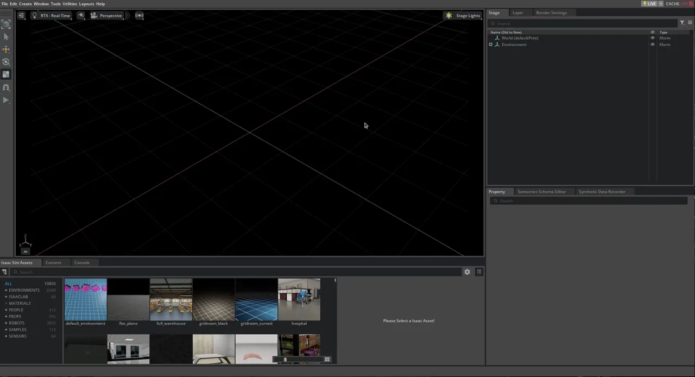
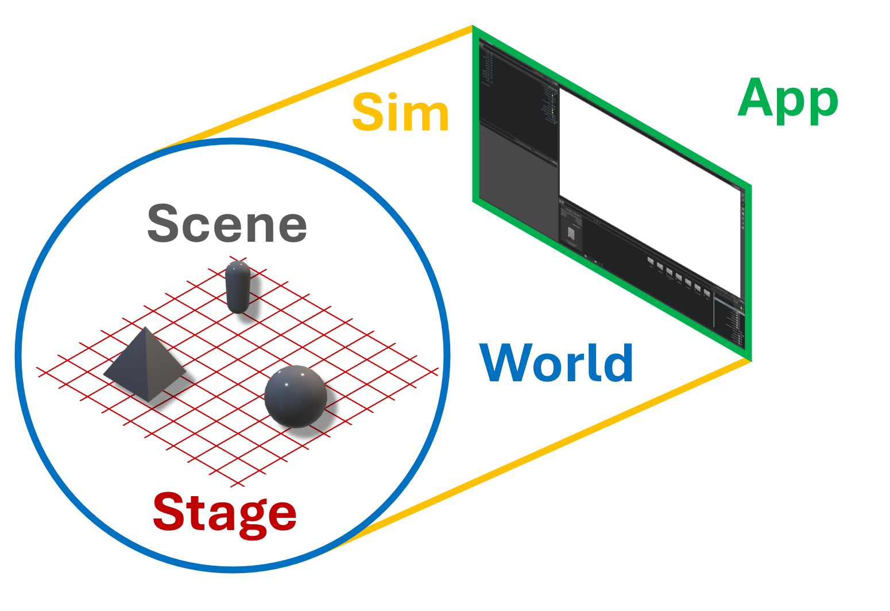
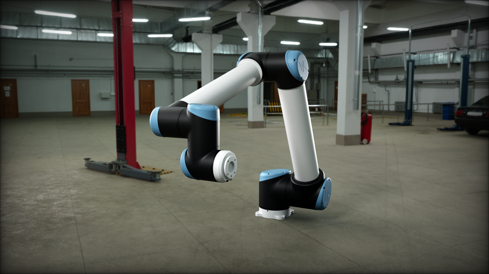
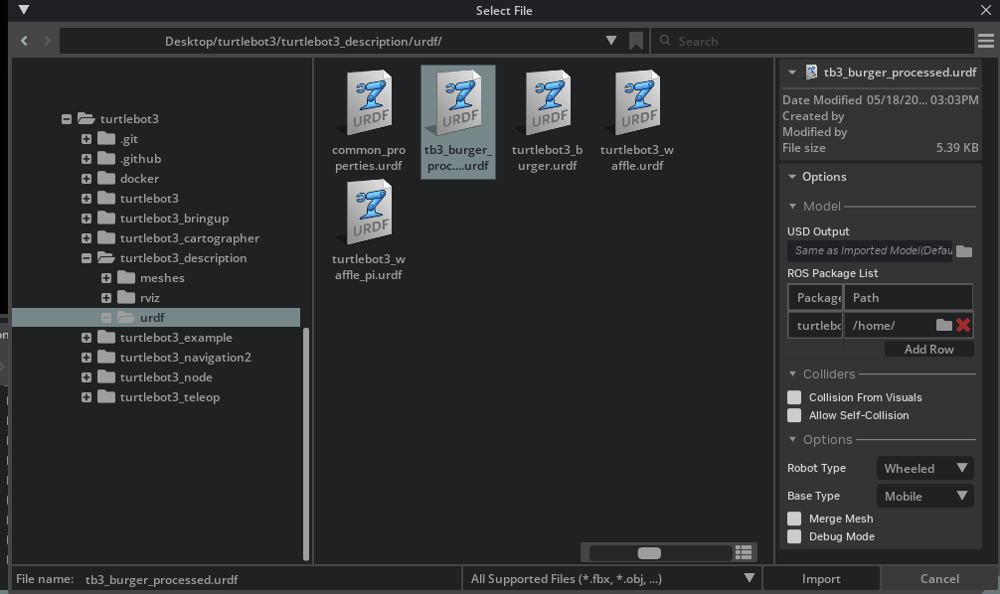
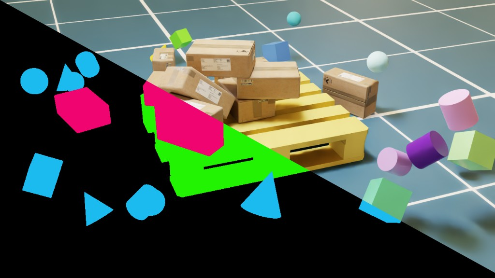
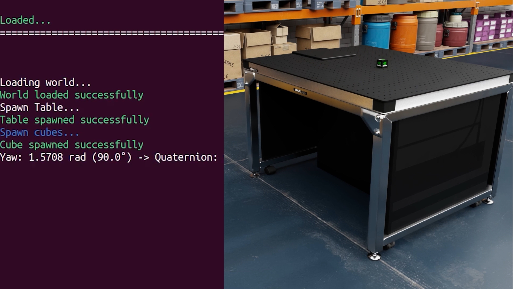
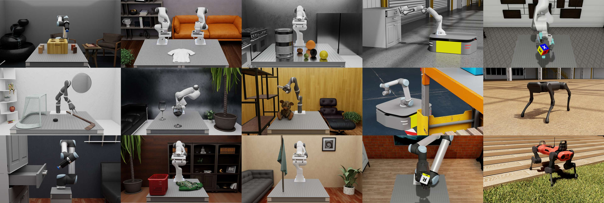
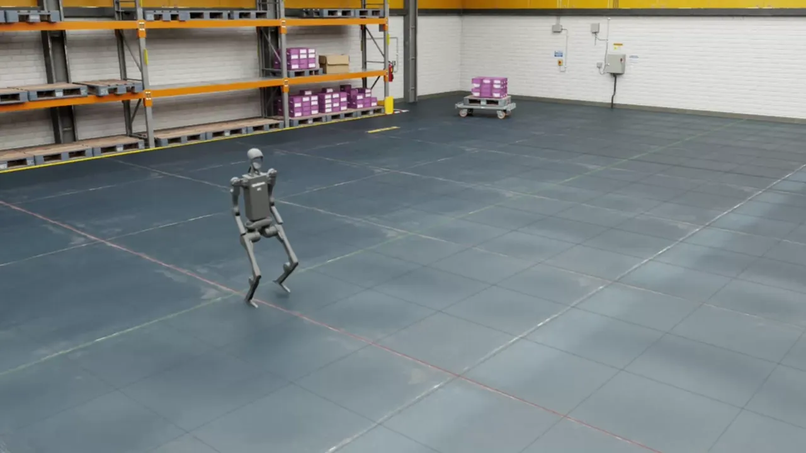

What Is Isaac Sim?#
Import robots and scenes from URDF, MJCF, Onshape CAD, or USD. Simulate with PhysX or Newton, add RTX and physics-based sensors, generate synthetic data, prepare robots for Isaac Lab, and validate robot stacks with ROS 2.
Getting Started#
Pick the setup that matches how you work. Most users should start with Quick Install. Choose Python or containers when you need pip, conda, CI, or remote workflows.
Tip
Running into issues? See Setup Tips for common fixes or the Troubleshooting page.
Tutorials#
Start with the topics users look for most: first simulation, robot import, sensors, ROS 2, synthetic data, and robot learning.

First steps: navigate the UI, load a scene, and run your first simulation.

Write your first standalone script to control robots and environments.

Bring a URDF robot into Isaac Sim, configure it, and simulate it on a stage.

Follow the TurtleBot flow from import and driving to sensors, timing, and transforms.

Generate labeled training data from Isaac Sim scenes with Replicator.

Use ROS 2 services and actions to load worlds, spawn entities, and step simulations.

Rig your robot and stage a scene in Isaac Sim so Isaac Lab can train policies on it.

Drive an AMR through randomized warehouse scenes and capture stereo camera data when it nears objects of interest.

Run a reinforcement learning policy through ROS 2 while Isaac Sim publishes observations and receives actions.
Isaac Sim Workflow Overview#
Bring assets in, configure the robot and scene, simulate behavior, then connect external stacks.
Each stage stays reusable: asset prep, robot and scene configuration, simulation, and stack connection all operate on the shared Isaac Sim scene.
For SDG, label the scene, vary conditions, simulate behavior, and render sensor outputs for downstream datasets.
For SIL, configure robot physics, sensors, and communication graphs, then validate the external robot stack before hardware.
Robotics Ecosystem#
Understanding the components of the NVIDIA robotics ecosystem and where Isaac Sim fits among them.
Each row shows the workflow step and the NVIDIA component that supports it.
-
01Build the scene & rig the robotIsaac SimOpen docs
Assemble USD scenes, run physics and sensors, connect external robot stacks.
-
02Train an RL or IL policy OptionalIsaac LabOpen docs
Train RL and imitation-learning policies with parallel environments.
-
03Evaluate policy at scale OptionalLab - ArenaOpen docs
Benchmark and compare trained policies across many scenes and seeds.
-
04Run the integrated SIL testIsaac SimOpen docs
Run software-in-the-loop tests with your ROS 2 or Isaac ROS robot stack.
Each row shows the workflow step and the NVIDIA component that supports it.
-
01Bring in real-world environments OptionalNuRecOpen docs
Gaussian-splat reconstructions of real environments, loaded as USD assets.
-
02Assemble & configure the sceneIsaac SimOpen docs
Assemble USD scenes, configure robots and sensors, run physics and rendering.
-
03Define variation, simulate, & write annotationsReplicatorOpen docs
Script randomization, capture sensor outputs, and write labeled datasets.
-
04Photoreal augmentation OptionalCosmos TransferOpen docs
Convert rendered RGB plus a text prompt into varied photoreal images, offline.
Open Source & Community#
Isaac Sim is open source and built to fit into existing robotics stacks. Use the shipped tools, read the code, or extend the simulator with Python and Kit.